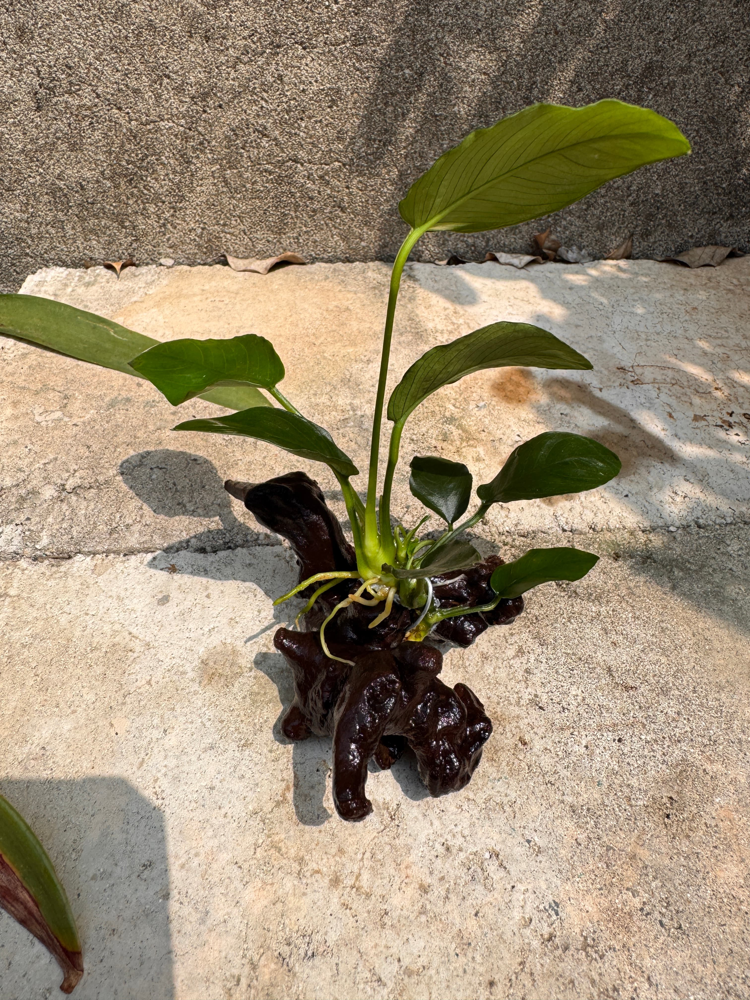

水族用品｜新竹新埔宇魚水族
沉木水草
現貨供應中NT$ 140 起
【宇魚嚴選】天然沉木水草 懶人造景首選，給愛魚一個自然溫馨的家 想讓魚缸更有層次感，又怕種草太麻煩嗎？「沉木水草」就是你的救星。我們挑選優質沉木結合耐養水草，你不必費心埋土、不必擔心翻缸，買回家直接放入魚缸就能完成造景。這不僅能提供魚隻躲避的空間，還能建立更穩定的生態環境，讓你的魚缸瞬間充滿大自然的生命力。 🔥 產品特色與優點 🔹 即放即美，懶人福音： 已經幫你黏好、固定好，直接入缸就是美景，不用擔心水草浮起來。 🔹 淨化水質，穩定生態： 水草能吸收缸內過多的硝酸鹽與廢物，並在燈照下提供溶氧，讓水質更健康。 🔹 藍眼鬍子的最愛： 沉木纖維是藍眼鬍子等異型魚類的必需品，透過啃食沉木可以幫助牠們消化，養出強健體魄。 🔹 自然的躲避空間： 茂密的水草能讓剛出生的仔魚或膽小的魚隻躲藏，減少被大魚攻擊或受驚嚇的機會。
價格、規格與庫存
商品與購買資訊
- 商品編號a10
- 商品分類水族用品
- 門市位置新竹縣新埔鎮義民路二段630巷9號
- 購買方式門市挑選／網站下單；活體提供專業包裝配送
購買注意事項
🔹 關於水色變化： 沉木剛入缸時，會因為木頭天然營養釋放（如單寧酸）導致水色變黃、變深，這是正常現象。若介意水色，可以增加換水頻率，水色會隨時間慢慢變清。 🔹 小生物的提醒： 水草為自然生長，環境中有可能夾帶少許螺類。雖然出貨前宇魚會盡可能幫大家移除，但仍建議入缸前可以再檢查一下或簡單檢疫喔。 🔹 基本光源需求： 雖然這些水草很耐陰，但每天還是建議給予 6-8 小時的穩定燈照，水草會長得更綠、更漂亮。 🔹 定期修剪保養： 水草長太茂密時，可以自行修剪掉老葉或枯葉，這樣能促進新葉生長，維持造景美觀。